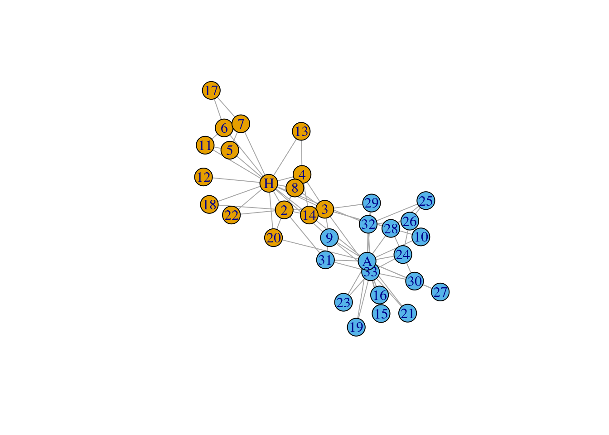

Last updated: 2023-10-19
Checks: 7 0
Knit directory: muse/
This reproducible R Markdown analysis was created with workflowr (version 1.7.1). The Checks tab describes the reproducibility checks that were applied when the results were created. The Past versions tab lists the development history.
Great! Since the R Markdown file has been committed to the Git repository, you know the exact version of the code that produced these results.
Great job! The global environment was empty. Objects defined in the global environment can affect the analysis in your R Markdown file in unknown ways. For reproduciblity it’s best to always run the code in an empty environment.
The command set.seed(20200712) was run prior to running
the code in the R Markdown file. Setting a seed ensures that any results
that rely on randomness, e.g. subsampling or permutations, are
reproducible.
Great job! Recording the operating system, R version, and package versions is critical for reproducibility.
Nice! There were no cached chunks for this analysis, so you can be confident that you successfully produced the results during this run.
Great job! Using relative paths to the files within your workflowr project makes it easier to run your code on other machines.
Great! You are using Git for version control. Tracking code development and connecting the code version to the results is critical for reproducibility.
The results in this page were generated with repository version 0929c35. See the Past versions tab to see a history of the changes made to the R Markdown and HTML files.
Note that you need to be careful to ensure that all relevant files for
the analysis have been committed to Git prior to generating the results
(you can use wflow_publish or
wflow_git_commit). workflowr only checks the R Markdown
file, but you know if there are other scripts or data files that it
depends on. Below is the status of the Git repository when the results
were generated:
Ignored files:
Ignored: .Rhistory
Ignored: .Rproj.user/
Ignored: r_packages_4.3.0/
Ignored: r_packages_4.3.1/
Untracked files:
Untracked: analysis/cell_ranger.Rmd
Untracked: analysis/complex_heatmap.Rmd
Untracked: analysis/sleuth.Rmd
Untracked: analysis/tss_xgboost.Rmd
Untracked: code/multiz100way/
Untracked: data/HG00702_SH089_CHSTrio.chr1.vcf.gz
Untracked: data/HG00702_SH089_CHSTrio.chr1.vcf.gz.tbi
Untracked: data/ncrna_NONCODE[v3.0].fasta.tar.gz
Untracked: data/ncrna_noncode_v3.fa
Untracked: data/netmhciipan.out.gz
Untracked: data/test
Untracked: export/davetang039sblog.WordPress.2023-06-30.xml
Untracked: export/output/
Untracked: women.json
Unstaged changes:
Modified: analysis/graph.Rmd
Note that any generated files, e.g. HTML, png, CSS, etc., are not included in this status report because it is ok for generated content to have uncommitted changes.
These are the previous versions of the repository in which changes were
made to the R Markdown (analysis/plotly_network.Rmd) and
HTML (docs/plotly_network.html) files. If you’ve configured
a remote Git repository (see ?wflow_git_remote), click on
the hyperlinks in the table below to view the files as they were in that
past version.
| File | Version | Author | Date | Message |
|---|---|---|---|---|
| Rmd | 0929c35 | Dave Tang | 2023-10-19 | Less verbose |
| html | 332f663 | Dave Tang | 2023-10-19 | Build site. |
| Rmd | c0079b2 | Dave Tang | 2023-10-19 | Plot networks using Plotly |
Plotly can be used to plot a Network Graph in R. The documentation does not work, so here’s my implementation.
packages <- c('plotly', 'igraph', 'igraphdata')
sapply(packages, function(x){
y <- require(x, character.only = TRUE)
if(y == FALSE){
install.packages(x, quiet = TRUE)
library(x, character.only = TRUE)
}
ver <- as.character(packageVersion(x))
}) plotly igraph igraphdata
"4.10.2" "1.5.1" "1.0.1" Load Zachary’s karate club. Network description from Wikipedia:
A social network of a karate club was studied by Wayne W. Zachary for a period of three years from 1970 to 1972. The network captures 34 members of a karate club, documenting links between pairs of members who interacted outside the club. During the study a conflict arose between the administrator “John A” and instructor “Mr. Hi” (pseudonyms), which led to the split of the club into two. Half of the members formed a new club around Mr. Hi; members from the other part found a new instructor or gave up karate. Based on collected data Zachary correctly assigned all but one member of the club to the groups they actually joined after the split.
data(karate, package="igraphdata")
karateThis graph was created by an old(er) igraph version.
Call upgrade_graph() on it to use with the current igraph version
For now we convert it on the fly...IGRAPH 4b458a1 UNW- 34 78 -- Zachary's karate club network
+ attr: name (g/c), Citation (g/c), Author (g/c), Faction (v/n), name
| (v/c), label (v/c), color (v/n), weight (e/n)
+ edges from 4b458a1 (vertex names):
[1] Mr Hi --Actor 2 Mr Hi --Actor 3 Mr Hi --Actor 4 Mr Hi --Actor 5
[5] Mr Hi --Actor 6 Mr Hi --Actor 7 Mr Hi --Actor 8 Mr Hi --Actor 9
[9] Mr Hi --Actor 11 Mr Hi --Actor 12 Mr Hi --Actor 13 Mr Hi --Actor 14
[13] Mr Hi --Actor 18 Mr Hi --Actor 20 Mr Hi --Actor 22 Mr Hi --Actor 32
[17] Actor 2--Actor 3 Actor 2--Actor 4 Actor 2--Actor 8 Actor 2--Actor 14
[21] Actor 2--Actor 18 Actor 2--Actor 20 Actor 2--Actor 22 Actor 2--Actor 31
[25] Actor 3--Actor 4 Actor 3--Actor 8 Actor 3--Actor 9 Actor 3--Actor 10
+ ... omitted several edgesUpgrade graph.
G <- upgrade_graph(karate)
str(G)Class 'igraph' hidden list of 10
$ : num 34
$ : logi FALSE
$ : num [1:78] 1 2 3 4 5 6 7 8 10 11 ...
$ : num [1:78] 0 0 0 0 0 0 0 0 0 0 ...
$ : num [1:78] 0 1 16 2 17 24 3 4 5 35 ...
$ : num [1:78] 0 1 2 3 4 5 6 7 8 9 ...
$ : num [1:35] 0 0 1 3 6 7 8 11 15 17 ...
$ : num [1:35] 0 16 24 32 35 37 40 41 41 44 ...
$ :List of 4
..$ : num [1:3] 1 0 1
..$ :List of 3
.. ..$ name : chr "Zachary's karate club network"
.. ..$ Citation: chr "Wayne W. Zachary. An Information Flow Model for Conflict and Fission in Small Groups. Journal of Anthropologica"| __truncated__
.. ..$ Author : chr "Wayne W. Zachary"
..$ :List of 4
.. ..$ Faction: num [1:34] 1 1 1 1 1 1 1 1 2 2 ...
.. ..$ name : chr [1:34] "Mr Hi" "Actor 2" "Actor 3" "Actor 4" ...
.. ..$ label : chr [1:34] "H" "2" "3" "4" ...
.. ..$ color : num [1:34] 1 1 1 1 1 1 1 1 2 2 ...
..$ :List of 1
.. ..$ weight: num [1:78] 4 5 3 3 3 3 2 2 2 3 ...
$ :<environment: 0x55c526603e98> This is how the graph is supposed to look, plotted using
igraph.
set.seed(1984)
L <- layout_nicely(G)
plot.igraph(G, layout = L)
| Version | Author | Date |
|---|---|---|
| 332f663 | Dave Tang | 2023-10-19 |
The colour can be obtained from vertex_attr, which can
query vertex attributes of a graph.
vertex_attr(G, 'color') [1] 1 1 1 1 1 1 1 1 2 2 1 1 1 1 2 2 1 1 2 1 2 1 2 2 2 2 2 2 2 2 2 2 2 2The function layout_nicely:
This function tries to choose an appropriate graph layout algorithm for the graph, automatically, based on a simple algorithm. See details below.
head(L) [,1] [,2]
[1,] -2.2255823 0.3194989
[2,] -1.8386306 -0.4652557
[3,] -0.8207017 -0.4476734
[4,] -1.3904744 0.5791814
[5,] -3.2027804 1.2951202
[6,] -3.3451087 1.9517754We can get the name of the vertices using V.
vs <- V(G)
vs+ 34/34 vertices, named, from 4b458a1:
[1] Mr Hi Actor 2 Actor 3 Actor 4 Actor 5 Actor 6 Actor 7 Actor 8
[9] Actor 9 Actor 10 Actor 11 Actor 12 Actor 13 Actor 14 Actor 15 Actor 16
[17] Actor 17 Actor 18 Actor 19 Actor 20 Actor 21 Actor 22 Actor 23 Actor 24
[25] Actor 25 Actor 26 Actor 27 Actor 28 Actor 29 Actor 30 Actor 31 Actor 32
[33] Actor 33 John A The edge list shows the connections.
el <- as.data.frame(get.edgelist(G))
head(el) V1 V2
1 Mr Hi Actor 2
2 Mr Hi Actor 3
3 Mr Hi Actor 4
4 Mr Hi Actor 5
5 Mr Hi Actor 6
6 Mr Hi Actor 7Create the network with just the nodes using our layout
L.
network <- plot_ly(
x = ~L[, 1],
y = ~L[, 2],
mode = "markers",
text = vs$label,
hoverinfo = "text",
type = "scatter",
size = I(42),
color = as.character(vertex_attr(G, 'color')),
colors = c('orange', 'skyblue'),
showlegend=FALSE
)
networkThe graph above lacks the edges, which we will manually create. For example, these two nodes need to connect.
el[1, ] V1 V2
1 Mr Hi Actor 2The layout contains the coordinates of the nodes but is not named.
tail(L) [,1] [,2]
[29,] 0.3532557 -0.2640971
[30,] 1.4325491 -2.5669892
[31,] -0.8031078 -1.9404862
[32,] 0.2683601 -0.8890504
[33,] 0.3278217 -2.2911416
[34,] 0.2410524 -1.9796959We can get the names using names.
my_layout <- L
row.names(my_layout) <- names(V(G))
tail(my_layout) [,1] [,2]
Actor 29 0.3532557 -0.2640971
Actor 30 1.4325491 -2.5669892
Actor 31 -0.8031078 -1.9404862
Actor 32 0.2683601 -0.8890504
Actor 33 0.3278217 -2.2911416
John A 0.2410524 -1.9796959To get the (x, y) coordinates, we just subset
my_layout.
get_xy <- function(x){
my_layout[x, ]
}
get_xy('Mr Hi')[1] -2.2255823 0.3194989Get the (x, y) coordinates of every node in the edge list.
xy1 <- t(
apply(el, 1, function(x){
get_xy(x[1])
})
)
xy2 <- t(
apply(el, 1, function(x){
get_xy(x[2])
})
)
head(xy1) [,1] [,2]
[1,] -2.225582 0.3194989
[2,] -2.225582 0.3194989
[3,] -2.225582 0.3194989
[4,] -2.225582 0.3194989
[5,] -2.225582 0.3194989
[6,] -2.225582 0.3194989Build the list of lines that will be used to connect the nodes.
line <- list(
type = "line",
line = list(color = "#030303", width = 0.3),
xref = "x",
yref = "y"
)
lines <- lapply(seq_along(xy1[, 1]), function(x){
c(
line,
x0 = xy1[x, 1],
y0 = xy1[x, 2],
x1 = xy2[x, 1],
y1 = xy2[x, 2]
)
})Plot the graph using layout to modify the default
layout.
axis <- list(title = "", showgrid = FALSE, showticklabels = FALSE, zeroline = FALSE)
layout(
network,
title = "Zachary's karate club Network",
shapes = lines,
xaxis = axis,
yaxis = axis
)
sessionInfo()R version 4.3.1 (2023-06-16)
Platform: x86_64-pc-linux-gnu (64-bit)
Running under: Ubuntu 22.04.3 LTS
Matrix products: default
BLAS: /usr/lib/x86_64-linux-gnu/openblas-pthread/libblas.so.3
LAPACK: /usr/lib/x86_64-linux-gnu/openblas-pthread/libopenblasp-r0.3.20.so; LAPACK version 3.10.0
locale:
[1] LC_CTYPE=en_US.UTF-8 LC_NUMERIC=C
[3] LC_TIME=en_US.UTF-8 LC_COLLATE=en_US.UTF-8
[5] LC_MONETARY=en_US.UTF-8 LC_MESSAGES=en_US.UTF-8
[7] LC_PAPER=en_US.UTF-8 LC_NAME=C
[9] LC_ADDRESS=C LC_TELEPHONE=C
[11] LC_MEASUREMENT=en_US.UTF-8 LC_IDENTIFICATION=C
time zone: Etc/UTC
tzcode source: system (glibc)
attached base packages:
[1] stats graphics grDevices utils datasets methods base
other attached packages:
[1] igraphdata_1.0.1 igraph_1.5.1 plotly_4.10.2 lubridate_1.9.3
[5] forcats_1.0.0 stringr_1.5.0 dplyr_1.1.3 purrr_1.0.2
[9] readr_2.1.4 tidyr_1.3.0 tibble_3.2.1 ggplot2_3.4.4
[13] tidyverse_2.0.0 workflowr_1.7.1
loaded via a namespace (and not attached):
[1] gtable_0.3.4 xfun_0.40 bslib_0.5.1 htmlwidgets_1.6.2
[5] processx_3.8.2 callr_3.7.3 tzdb_0.4.0 vctrs_0.6.4
[9] tools_4.3.1 crosstalk_1.2.0 ps_1.7.5 generics_0.1.3
[13] fansi_1.0.5 pkgconfig_2.0.3 data.table_1.14.8 lifecycle_1.0.3
[17] compiler_4.3.1 farver_2.1.1 git2r_0.32.0 munsell_0.5.0
[21] getPass_0.2-2 httpuv_1.6.11 htmltools_0.5.6.1 sass_0.4.7
[25] yaml_2.3.7 lazyeval_0.2.2 later_1.3.1 pillar_1.9.0
[29] jquerylib_0.1.4 whisker_0.4.1 ellipsis_0.3.2 cachem_1.0.8
[33] tidyselect_1.2.0 digest_0.6.33 stringi_1.7.12 rprojroot_2.0.3
[37] fastmap_1.1.1 grid_4.3.1 colorspace_2.1-0 cli_3.6.1
[41] magrittr_2.0.3 utf8_1.2.3 withr_2.5.1 scales_1.2.1
[45] promises_1.2.1 timechange_0.2.0 rmarkdown_2.25 httr_1.4.7
[49] hms_1.1.3 evaluate_0.22 knitr_1.44 viridisLite_0.4.2
[53] rlang_1.1.1 Rcpp_1.0.11 glue_1.6.2 rstudioapi_0.15.0
[57] jsonlite_1.8.7 R6_2.5.1 fs_1.6.3